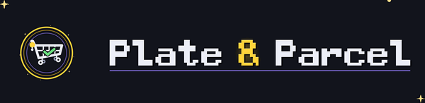

◌Everyone with the link sees the same list. Tick something off and it turns up on the other phones a second or two later — even from inside the shop.
Whoever sent you the link will tell you what it is. You type it once on this phone, and it never leaves this phone.
Pick the shop you are standing in at the top, then tap Got, Swap or Skip on each row.
Auto follows whatever your phone already does. Tap Light or Dark to try them — the screen changes as you tap.
If the writing is too small, tap Text size at the top of the screen. Both of these live under Menu → Appearance later.